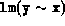
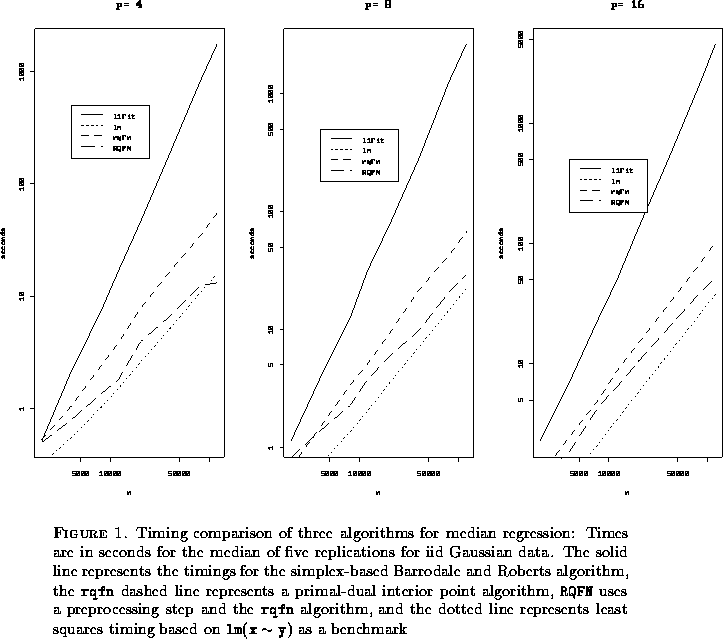

The following code illustrates a function to conduct a monte-carlo experiment designed to compare the computational efficiency of several algorithms for (median) regression.
"monte"<- function(run, ns = c(20000, 40000, 80000, 120000), ps = c(4, 8, 16), R = 5, methods = expression(lm(y x), l1fit(x, y), rqfn(x, y), RQFN(x, y)), dfx = expression(matrix(rnorm(p * n), n, p)), dfy = expression(rnorm(n) ), mse = list(2, c(3, 4))) { version <- 5 #function for timing experiments for rqn paper #Input: # ns-a vector of sample sizes # ps-a vector of parameter dimensions, intercept will be appended # R -number of replications of each n,p pair # methods-methods to be compared should be of the form: # expression(lm(y x),l1fit(x,y),rqfn(x,y),RQFN(x,y)) # this is a list which can be evaluated as eval(methods[[i]]) # dfx-expression to generate design matrix # dfy-expression to generate response vectors # mse-list describing how to evaluate accuracy: # 1. benchmark method (number in methods list) # 2. new methods under test (numbers in methods list) # #Output: # result-data structure with the components # times-array of timings # err -root mse of bhat for new methods vis a vis benchmark # seed -initial .Random.seed # doc-attribute of result describing in detail how it was created # options(object.size = 150000000) #checking for dynloading now occurs in the rq functions #do the biggest problem first in case there are memory problems ns <- rev(sort(ns)) ps <- rev(sort(ps)) times <- array(0, c(length(methods), R, length(ps), length(ns))) err <- array(0, c(length(mse[[2]]), R, length(ps), length(ns))) seed <- .Random.seed for(i in 1:length(ns)) { n <- ns[i] print(paste("n=", n)) for(j in 1:length(ps)) { p <- ps[j] print(paste("p=", p)) b <- matrix(0, p + 1, length(methods)) x <- eval(dfx) m <- x for(k in 1:R) { y <- m + eval(dfy) for(l in 1:length(methods)) { times[l, k, j, i] <- unix.time(b[, l] <- eval( methods[[l]])$coef)[1] } err[, k, j, i] <- sqrt(apply((b[, mse[[2]]] - b[ , mse[[1]]]) 2, 2, "mean")) } } } dimnames(times) <- list(paste(methods), NULL, paste("p=", ps, sep = ""), paste("n=", ns, sep = "")) result <- list(times = times, err = err, seed = seed, dfx = dfx, dfy = dfy) doc(result) <- how.created(paste("Test", run, "on", unix("hostname")), text = F) return(result) }
Notice first that we have 4 default methods to compare: one is the function provided by S, two are new functions which we will describe in further detail below, rqfn, RQFN, and the fourth is the standard least squares function

which will serve as a benchmark to evaluate the performance of the algorithms. The use of the functionmethods_expression()provides a convenient general way to introduce the methods in the form of a list through which we may loop, using the function
eval(methods[[i]]).Similarly we introduce methods for generating the data as illustrated by the specifications of dfx and dfy in the function calling sequence. Specification of the sample sizes and parametric dimension of the model are introduced simply as vectors, again to facilitate looping.
The function begins by organizing the work to be done so that the most challenging problems, the largest ones in this case, come first. This way if the simulation fails due to memory constraints, for example, it is likely to do so immediately. An array is then initialized for the results of the experiment and the current value of .Random.seed is stored for future reference. The storage of .Random.seed is critical to reproducibility. By simply reassigning .Random.seed at any future point to the value seed and reexecuting the function monte we may reproduce the precise results of experiment. Of course this claim must be qualified somewhat if the experiment is conducted on different hardware, but the portability of the SPLUS random number generator assures that sequence of random numbers generated will be the same up to machine precision even across machines. Thus seed will be a crucial component in what is returned by the function monte.
The next few lines loop through the configurations of the experiment with the timing result, the first component (user-time) of unix.time, in the array times. Since looping is notoriously slow in SPLUS it is worth pausing to comment briefly on efficiency considerations for the experiment at this point. It may be noted that the number of replications of the experiment is small, 5 according to the default set in the calling experiment. This is probably atypical of most experiments in econometrics. Here we are doing a small number of very large problems, while it would be more typical to do a large number of much smaller problems. In the latter case it would be highly desirable to incorporate the replications into a single call, a lower level FORTRAN or C call, passing, for example, a matrix of y's to each element of the methods. This is unnecessary in the present instance and probably infeasible as well due to memory constraints. We will have more to say about the issue of looping in the next section. It is also important in the present application to evaluate the accuracy of the solutions computed by the new methods rqrn and RQFN. This is done in the array err which reports root mean squared errors for these solutions relative to the answer provided by l1fit.
Once the array times has been filled we can assign dimension labels to it. This is facilitated by the form of the vectors ns, ps and the list methods using the paste function. Then the result of the experiment is packaged as a list consisting of the components.
Finally, we conclude the call to monte by creating a documentation attribute for the list result using the assignment,
doc(result) how.created(paste(...),text=F)This has the effect of appending several additional pieces of information to the outcome of the experiment which serve to identify precisely how it was created. This is illustrated in the next display. A typical call to monte might look like,
m.5_mont(5)Typically, we wouldn't want to execute this interactively, so it would be reasonable to put this command in a file, say mc.s and at the system prompt, type
SPLUS <mc.s <& mc.o &which begins an SPLUS process which is run in the background. It takes input from mc.s and put output, including diagnostic output, into the file mc.o. Since SPLUS doesn't commit assignments until it concludes successfully, one way to monitor progress of a job of this type is to put print statements of the form
print(paste("k=",k))in the loop construct, which will allow the user to check the output file mc.o periodically to see where in the k-loop the job has arrived. The output m.5 looks like this:

err:, , 1, 1 [,1] [,2] [,3] [,4] [,5] [1,] 3.414232e-05 1.566616e-05 4.964434e-06 4.395257e-05 4.359341e-05 [2,] 3.414232e-05 1.566619e-05 4.964458e-06 4.395101e-05 4.359344e-05
, , 2, 1 [,1] [,2] [,3] [,4] [,5] [1,] 8.338684e-06 8.136083e-07 1.523099e-05 1.507634e-05 1.681484e-05 [2,] 8.338627e-06 8.135856e-07 1.523034e-05 1.507631e-05 1.681402e-05
, , 3, 1 [,1] [,2] [,3] [,4] [,5] [1,] 2.216078e-05 3.553101e-06 1.787060e-07 1.443290e-07 1.174932e-07 [2,] 2.215855e-05 3.553141e-06 1.787061e-07 1.443649e-07 1.175176e-07
, , 1, 2 [,1] [,2] [,3] [,4] [,5] [1,] 5.675161e-06 2.087732e-05 3.657927e-05 7.909246e-06 2.421033e-05 [2,] 5.675195e-06 2.087763e-05 3.657925e-05 7.909236e-06 2.420965e-05
, , 2, 2 [,1] [,2] [,3] [,4] [,5] [1,] 1.085759e-06 2.920666e-06 6.352805e-06 5.974413e-06 7.780196e-06 [2,] 1.085678e-06 2.927971e-06 6.352803e-06 5.974751e-06 7.780130e-06
, , 3, 2 [,1] [,2] [,3] [,4] [,5] [1,] 2.024797e-07 1.828511e-07 1.799722e-07 3.088179e-06 2.973498e-07 [2,] 2.074590e-07 1.892743e-07 1.799714e-07 3.088172e-06 2.973314e-07
, , 1, 3 [,1] [,2] [,3] [,4] [,5] [1,] 5.652814e-07 1.100742e-05 3.460726e-05 1.387323e-05 4.565225e-07 [2,] 5.642479e-07 1.100742e-05 3.460725e-05 1.387323e-05 4.556660e-07
, , 2, 3 [,1] [,2] [,3] [,4] [,5] [1,] 2.654629e-07 2.151161e-07 3.984395e-05 2.589425e-05 1.905348e-05 [2,] 2.654589e-07 2.149446e-07 3.984391e-05 2.583213e-05 1.905358e-05
, , 3, 3 [,1] [,2] [,3] [,4] [,5] [1,] 6.891924e-08 3.6193e-05 5.676117e-08 1.431328e-07 1.365530e-06 [2,] 6.865607e-08 3.6193e-05 5.648426e-08 1.432799e-07 1.365537e-06
, , 1, 4 [,1] [,2] [,3] [,4] [,5] [1,] 1.334859e-06 8.979264e-07 2.673230e-06 8.003513e-07 2.444837e-06 [2,] 1.334141e-06 8.978599e-07 2.673231e-06 8.004130e-07 1.692292e-06
, , 2, 4 [,1] [,2] [,3] [,4] [,5] [1,] 3.549152e-07 1.582878e-07 9.958417e-06 4.616344e-07 4.836977e-07 [2,] 3.549160e-07 1.582885e-07 9.954472e-06 4.614458e-07 4.702986e-07
, , 3, 4 [,1] [,2] [,3] [,4] [,5] [1,] 3.603852e-07 1.116334e-07 4.817329e-08 2.730610e-07 1.963181e-07 [2,] 3.598513e-07 1.115358e-07 4.821597e-08 2.824074e-07 1.964258e-07
seed: [1] 21 61 59 7 40 2 33 62 52 13 55 3
dfx: expression(matrix(rnorm(p * n), n, p))
dfy: expression(rnorm(n))
attr(, ;SPMquot;doc;SPMquot;): attr(, ;SPMquot;doc;SPMquot;)what: attr(, "doc")whatcomment: [1] "Test 5 on ragnar.econ.uiuc.edu"
attr(, "doc")whatcall: monte(5)
attr(, "doc")whatversion: [1] 5
attr(, "doc")whatenv: [1] ".Data" [2] "/usr/local/splus/splus/.Functions" [3] "/usr/local/splus/stat/.Functions" [4] "/usr/local/splus/s/.Functions" [5] "/usr/local/splus/s/.Datasets" [6] "/usr/local/splus/stat/.Datasets" [7] "/usr/local/splus/splus/.Datasets" [8] "/usr/local/splus/library/local/.Data" [9] "/usr/local/splus/library/local/.Datasets"
attr(, "doc")when: [1] ;SPMquot;Sun Sep 8 20:12:03 CDT 1996;SPMquot;
attr(, ;SPMquot;doc;SPMquot;)who: [1] "roger"
Note that in addition to the main components times, err, seed, dfx, dfy of m.3 we have 4 documentation components:
Together the components of result assigned to m.5 constitute a detailed description of how the experiment was conducted and how it would be reproduced. The functions used to create the documentation attribute are not part of SPLUS 3.3 but were contributed by Jeff Marcus and developed further by Z. Todd Taylor. They are accessible from splus.local on ragnar.econ.uiuc.edu, however, as are a significant number of other bells and whistles for SPLUS.